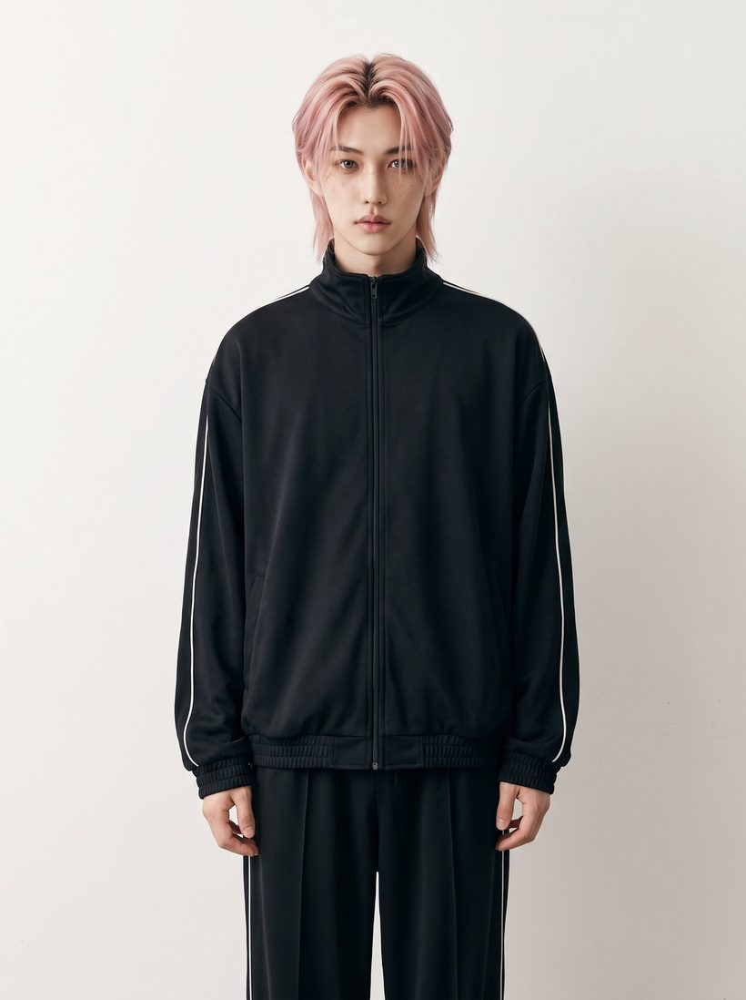
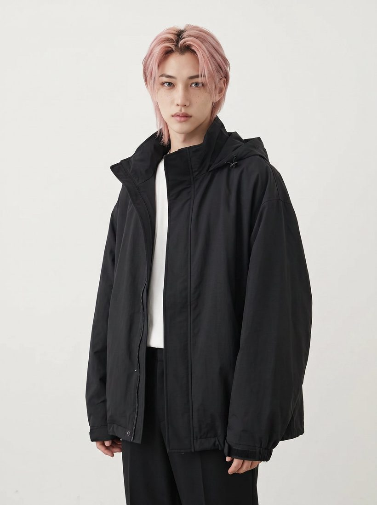
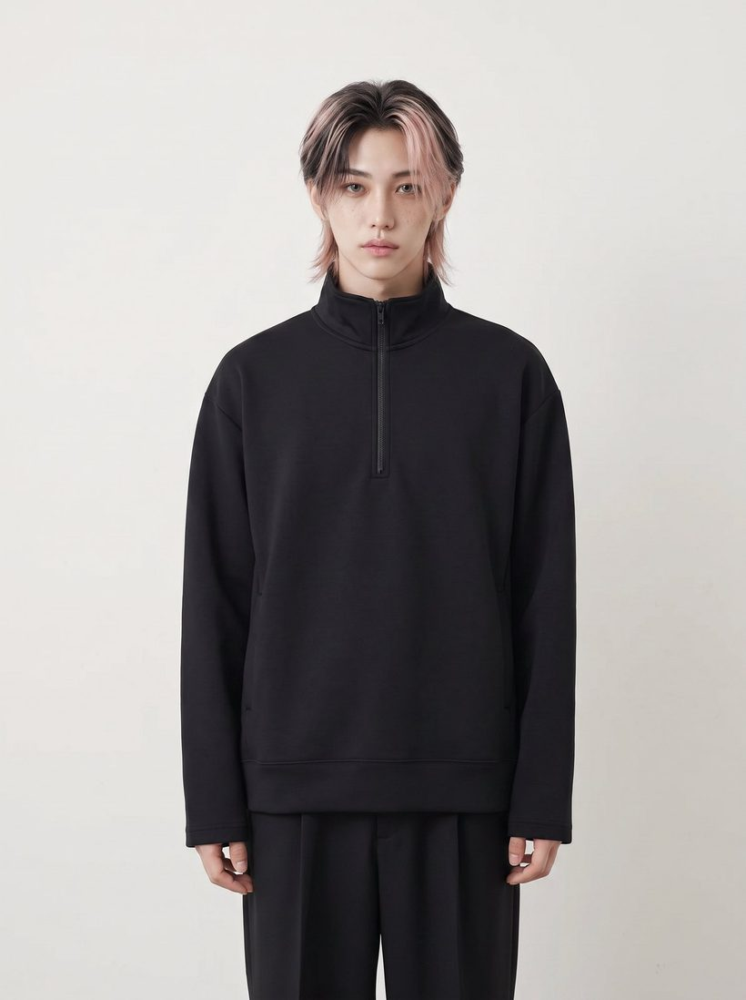
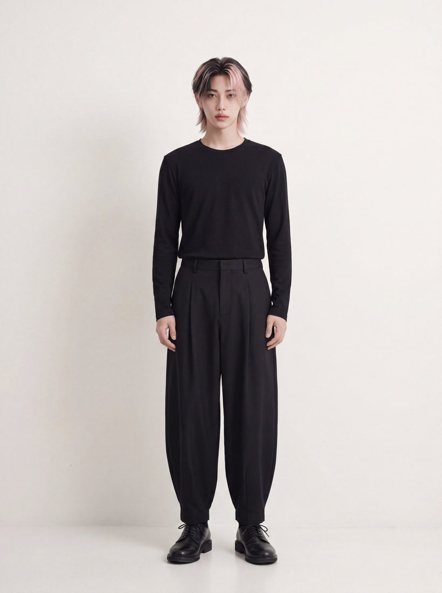
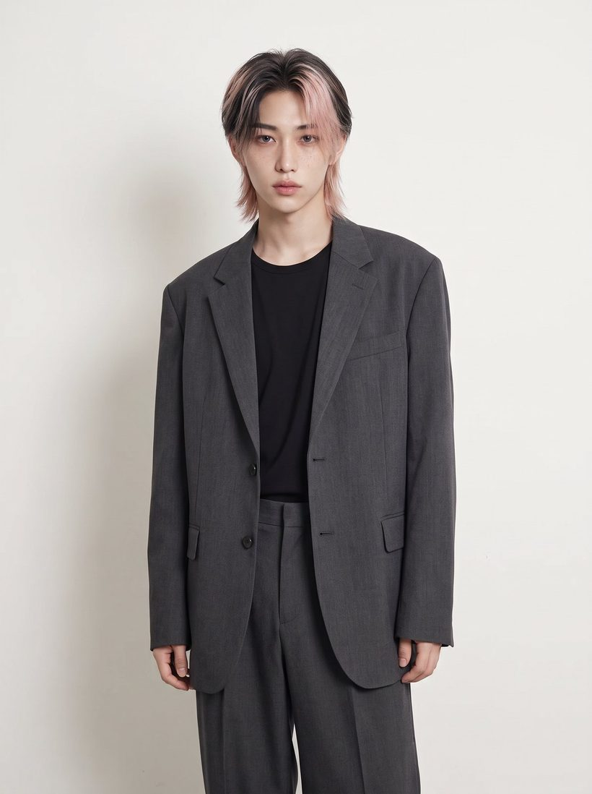
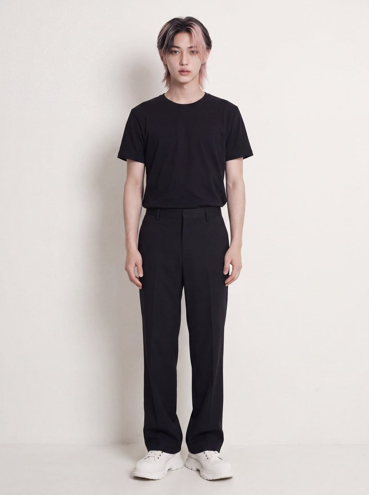

日常から、半歩だけ外す。
The Mark
5つの文字すべてに、切れ目が1つずつ入っています。デザインの都合ではありません。
完成しきっていない。一箇所だけ、いつもの形から外れている。私たちが服で売りたい価値と、ロゴの形が同じことを言っています。
奇抜な服はつくりません。学校にもバイトにも着ていける服のまま、シルエットと質感だけで「いつもと違う」をつくる。一歩ではなく、半歩
First Drop






全24型で開店します。価格とサイズの実寸表は、開店と同時に公開します。
Before You Ask
Open First
公式LINEの友だち限定で、開店当日に使えるクーポンをお渡ししています。新作の入荷も、まずここでお知らせします。